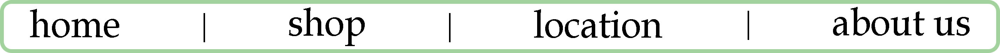
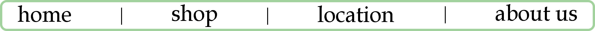

We are a local dog supply store located in Saint Charles, Missouri. We have been open since 2017 with our goal of supplying our community with any and all dog-related items, spanning from leashes and collars to toys and treats.
Location We are located on 132 Oakwood Rd, St. Charles, MO 63301
Our Hours (closed most holidays)
Sunday
12AM - 6PM
Monday
10AM - 8PM
Tuesday
10AM - 8PM
Wednesday
10AM - 8PM
Thursday
10AM - 8PM
Friday
10AM - 8PM
Saturday
11AM - 8PM
Contact Us You can reach us through our phone at (636) ABC-DOGS / (636) 222-3647 or our e-mail, store@alphabarkcentral.com
Who are we? Alpha Bark Central is owned by Zac Snyder and some of his friends, all born and raised in St. Charles. Zac went to Saint Charles High and then decided to open this wonderful store with his two friends, Jimbo and Carol. Jimbo was in the graduating class of 2003, and has since earn several degrees in pet shop supply marketing. Carol owns three dogs and just likes to help out. That's all, thanks for reading.
 
